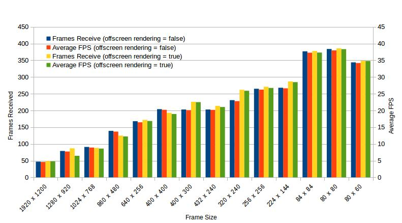
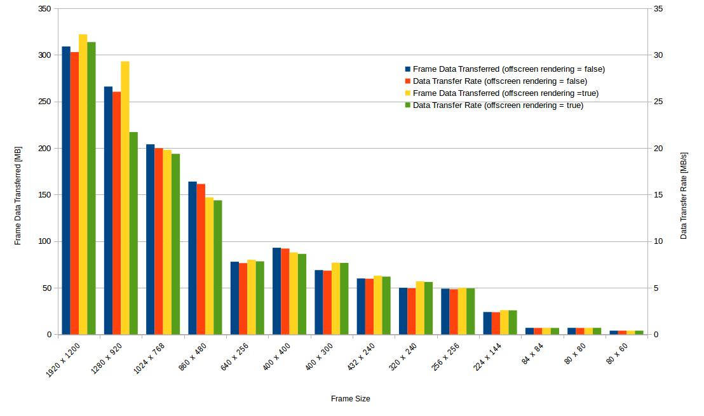

Tue May 29 2018¶
Last time we ran Malmo on my Ubuntu virtual machine, the frame rate was so slow that we could not even see what is going on. So today we enlarged display memory capacity to 128M and discovered that the game runs more smoothly. Later we performed a render speed test and found that smaller rendering size could result in higher frame rate and lower data throughput.
My virtual machine’s configuration:
- OS: Ubuntu 16.04 64bit
- Memory: 5120MB
- Display Memory: 128MB
- 4 CPUs: Intel Core i5-6300HQ @ 2.30GHz
Working Directory: AgentSteve/Malmo-0.34.0-Linux-Ubuntu-16.04-64bit_withBoost_Python2.7
Now, launch the Malmo platform. Under Python_Examples folder, we run the script render_speed_test.py in terminal. Below are the results, we have visualized them with charts, where x axis represents different frame size (e.g. 1024 X 768).
First look at results related with frames.
In general, as can be seen, as frame size decreases, we will have higher FPS and receive more frames. So in our future experiments, we should use a relatively small frame size to obtain high FPS, so that the game runs smoothly. And in most cases, turning on the offscreen rendering option will result in higher FPS.
Then let’s look at results related with data throughput.
From the picture above, we can discover that as frame size decreases, data throughput also decreases, rapidly. So in our later experiments, we should use a relatively small frame size to obtain low data throughput, so that our system doesn’t need to handle high pressure of data.
Conclusion¶
The performance of Malmo platform can be speed up by reducing the rendering frame size, as large frame is not necessary for learning system.